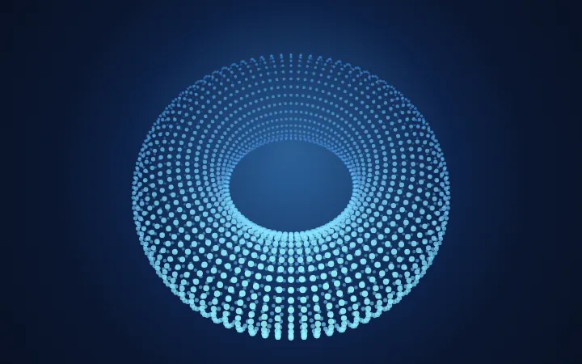

A hero with a turntable
Product spins, architectural walkthroughs, title sequences — anywhere a video would normally autoplay. The visitor scrubs it, which keeps it silent, cheap and reversible.
Recipe 19 · Scroll-scrub video
Apple-style frame scrubbing: a WebP sequence sits on a canvas and scroll position picks the frame. No video decode, no autoplay, and the poster is the very first frame.

Scroll-scrub · 24 frames · WebP
One frame per scroll position. The video never plays on its own — you do.
loading frames 0 / 24Every scroll position is a frame.
Scroll back up and it turns the other way.
Product spins, architectural walkthroughs, title sequences — anywhere a video would normally autoplay. The visitor scrubs it, which keeps it silent, cheap and reversible.
240vh pin length (190 on mobile)Math.round(p * (n - 1)) frame mapping0.16 lerp for the scrubframes/ 24 WebP frames + posterWith reduced motion the canvas is hidden and the poster stays. Frames are decoded once, drawn with drawImage only when the frame index changes, and the loop stops when settled. ~510 KB for 24 frames at 720×450.